Founder selected the question-led A opening with immediate answer reveal. See first-five-seconds/REVIEW.md for the current implementation. Local founder-review prototype · not deployed · synthetic examples and emulator fixtures
One question.
A clear finding.
An understandable next step.
This review links to the actual Angular prototype, not a separate application. The local preview must be running. Do not enter real bills or customer details. Paired desktop/mobile captures document the working checkpoints.
First visit → free finding → evidence → matching input
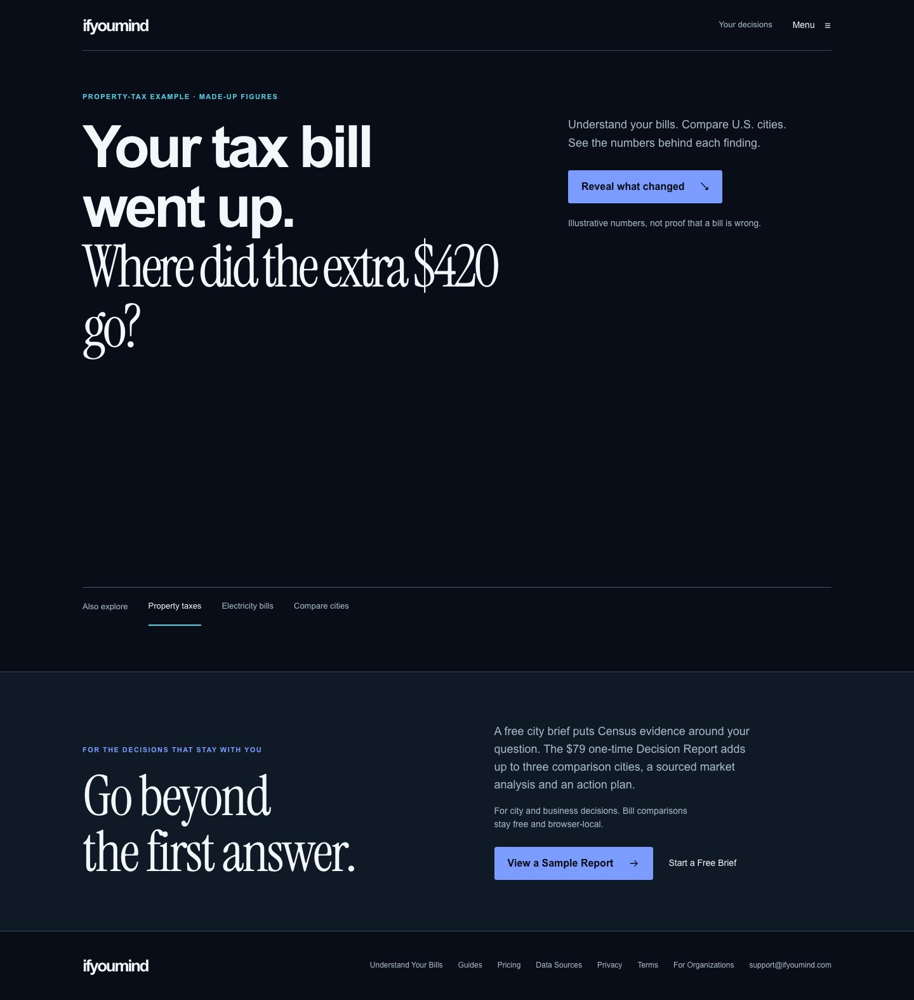
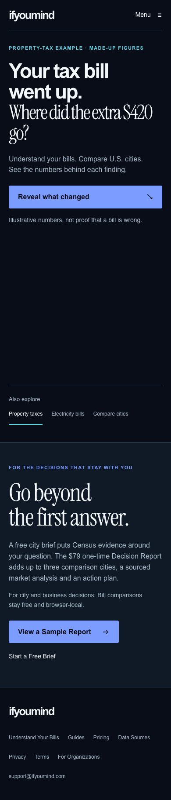
Inspect the bill’s evidence
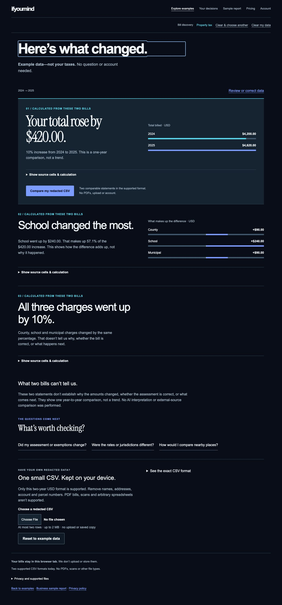
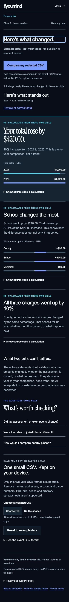
Continue with your own supported information
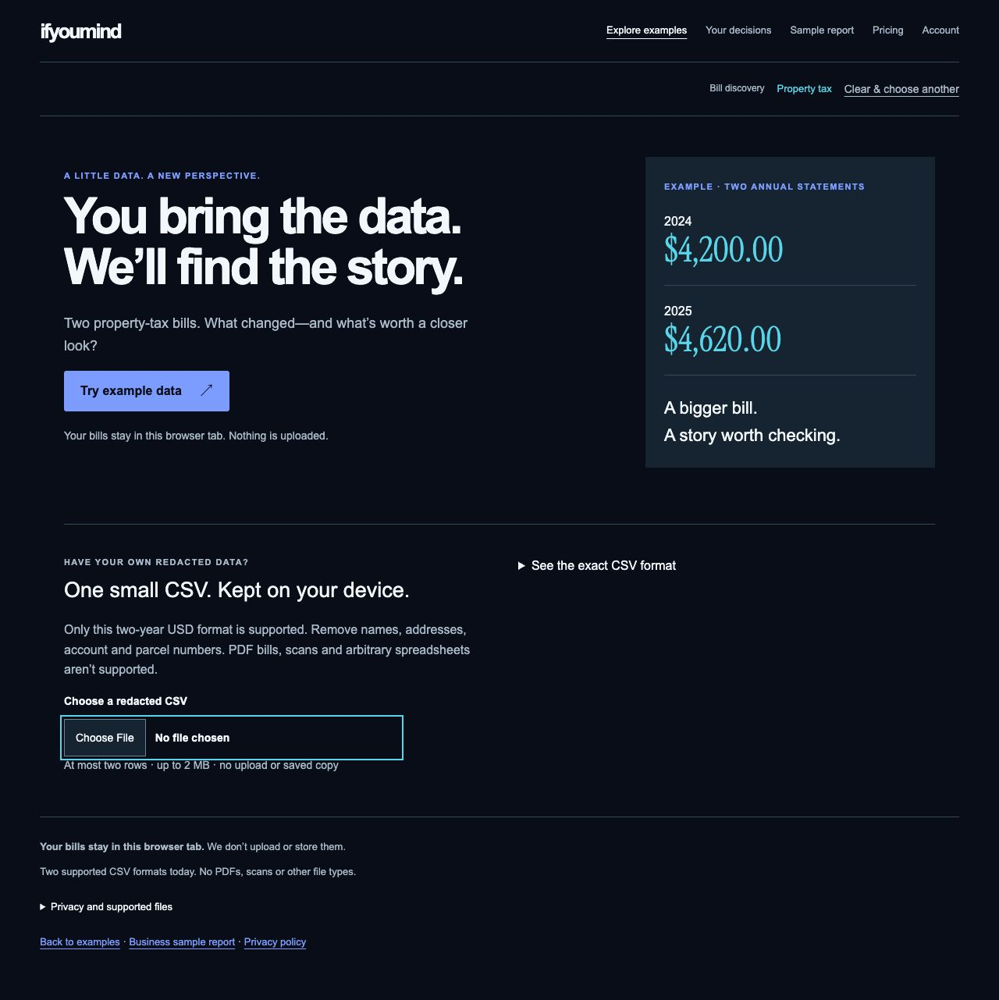
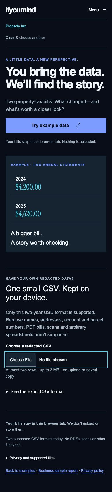
Resume your saved city question
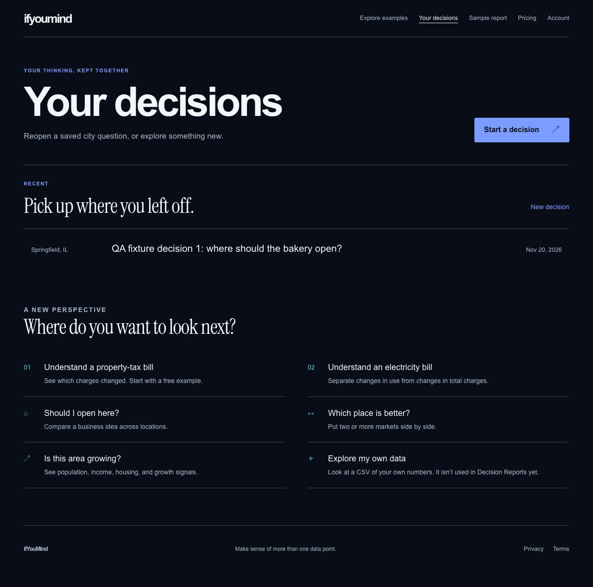
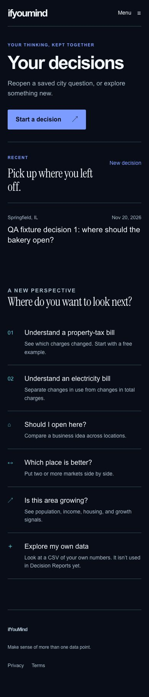
Understand the optional purchase
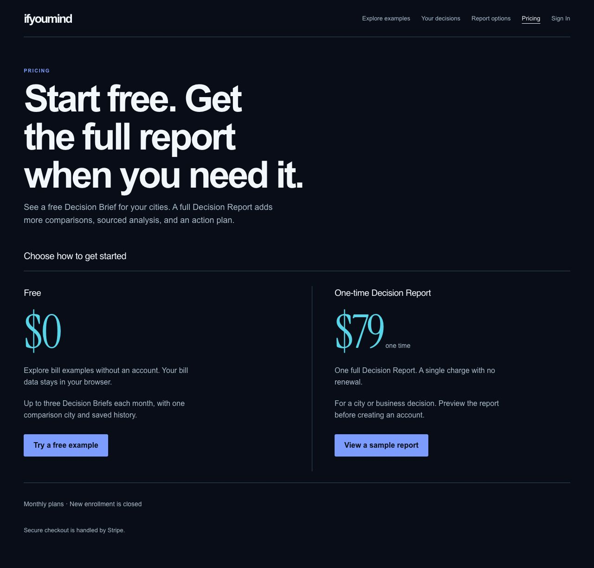
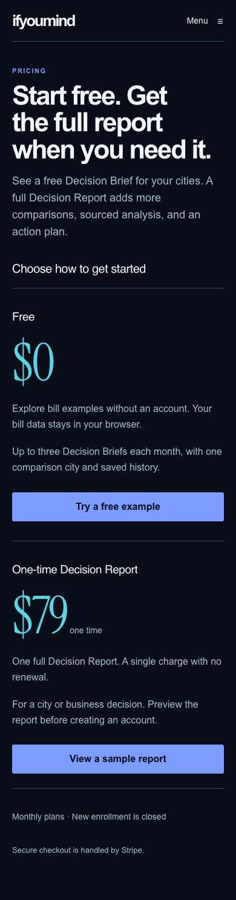
Account datasets stay distinct from private bills
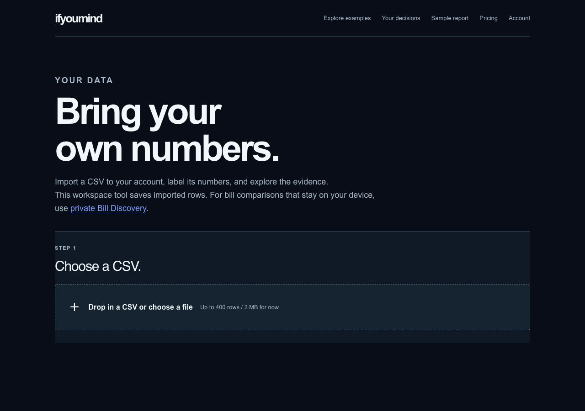
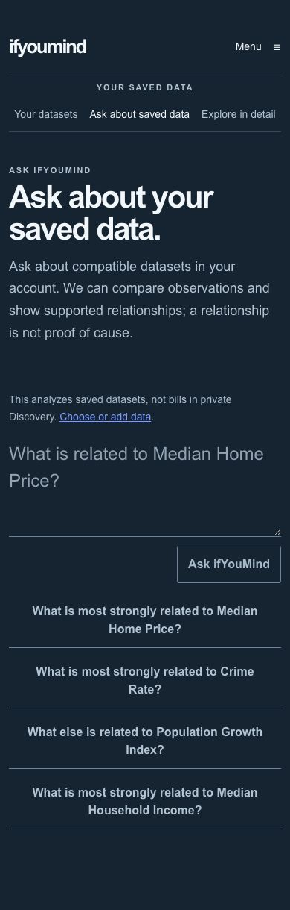
Human acceptance is untested. The founder’s five unassisted tasks remain the release criterion. See REVIEW.md for the complete route map, privacy boundaries and verification evidence.